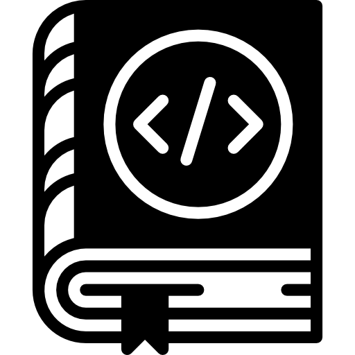

Programació d'ordinadors
Índex
Resum
La programació d'ordinadors o programació informàtica (sovint abreujat programació o codificació) és el procés d'escriure, provar, depurar/solucionar problemes, i mantenir el codi font de programes. Aquest codi font està escrit en un llenguatge de programació. El codi pot ser una modificació d'una font existent o una cosa completament nova. L'objectiu de la programació és crear un programa que mostra un determinat comportament desitjat (personalització). El procés d'escriure el codi font sovint requereix experiència en molts temes diferents, incloent coneixement de l'àmbit d'aplicació, dels algorismes especialitzats i lògica formal.

Breu Història de la programació
La primera màquina programable és, probablement, el teler de Jacquard, que es va completar el 1801. El 1936, la publicació de l'article seminal de la ciència informàtica On Computable Numbers with an Application to the Entscheidungsproblem per Alan Mathison Turing, va posar en marxa la creació de l'ordinador programable. Amb els avenços en emmagatzematge de dades, es fa possible carregar el programa a partir de targetes perforades, contenint la llista de les instruccions en codi binari específic per a un tipus particular d'ordinador.
Llenguatges de programació
«Molts llenguatges de programació proporcionen un mecanisme per cridar funcions proporcionades per llibreries. Sempre que les funcions en una llibreria segueixin les convencions de temps d'execució apropiades , llavors aquestes funcions es poden escriure en qualsevol altre llenguatge.